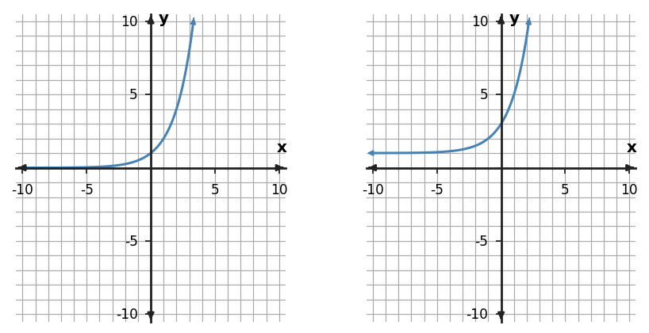

Algebra Practice 8.2 :::: Set 3
1. Describe the horizontal and vertical translation from $f(x)=|x|$ to $g(x)=|x-5|+3$.
2. Write a transformed rule for $f(x)=(0.5)^x$ shifted 1 unit left.
3. For $g(x)=-0.5f(x-2)$, transform each listed parent point and describe the coordinate rule.
| Parent $x$ | Parent $y$ |
|---|---|
| -2 | 4 |
| 0 | 0 |
| 2 | 4 |
4. Compare $g(x)=-0.5|x+2|+5$ with $f(x)=|x|$. Describe the reflection/compression and translations.
5. Compare the parent graph on the left with the transformed graph on the right. Describe the transformation using key features, not just overall appearance.

6. A transformation takes $f(x)$ to $g(x)=f(x+1)+6$. State the horizontal and vertical shifts.
7. The point $(-2,6)$ lies on $y=f(x)$. Under $g(x)=0.5f(x)$, where does that key point move?
8. A revenue model $R(t)$ is adjusted by adding a fixed 150-dollar service credit to every output. Write the transformed model and describe the graph change.
9. Compare $x^2$, $|x|$, and $2^x$. If each parent is replaced by $f(x-2)+3$, what transformation is common to all three families?
10. Start with $f(x)=x^2$. Write the rule for a graph shifted 1 unit(s) right and 2 unit(s) down.
11. Describe the horizontal and vertical translation from $f(x)=|x|$ to $g(x)=|x+3|+4$.
12. Write a transformed rule for $f(x)=2^x$ shifted 5 unit(s) up.
13. For the transformation $g(x)=-2f(x-1)$, use the parent key points to complete/interpret the transformed points.
| parent $x$ | parent $y$ | new $x$ | new $y$ |
|---|---|---|---|
| -1 | 1 | 0 | -2 |
| 0 | 0 | 1 | 0 |
| 1 | 1 | 2 | -2 |
14. Compare $g(x)=0.5|x-4|-2$ with its parent function. Describe the reflection/stretch/compression and translations that are visible.
15. Compare the parent graph on the left with the transformed graph on the right. Describe the transformation using key features, not just overall appearance.

16. A transformation takes $f(x)$ to $g(x)=f(x-1)-3$. State the horizontal and vertical shifts.
17. The point $(2,5)$ lies on $y=f(x)$. Under $g(x)=2f(x)$, where does that key point move?
18. A quadratic height model $h(t)$ is recalibrated so every measured height is 1.5 meters higher, while time is unchanged. Write the transformed model in function notation and explain the graph change. State which key features change and which do not.
19. For $y=8(0.5)^x-1$, state the y-intercept and horizontal asymptote.
20. The right-hand graph in the exponential panel is a transformation of $2^x$. Identify the horizontal asymptote and whether it represents growth or decay.

21. State the growth factor and write one exponential rule that fits if the first value occurs at $x=0$.
| $x$ | 0 | 1 | 2 | 3 |
|---|---|---|---|---|
| $y$ | 20 | 10 | 5 | 2.5 |
22. Solve $x^2-10x+16=0$ by completing the square.
23. Rewrite $y=x^2-4x-1$ in vertex form by completing the square, then state the vertex.
24. What term must be added to $x^2-12x$ to create a perfect-square trinomial? Write the resulting square.